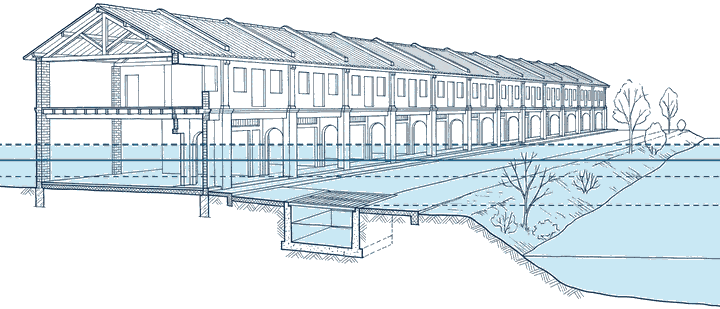
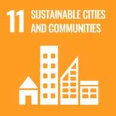
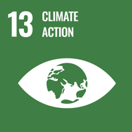

See how deep a modelled flood gets there, and what it could cost.
Not on the list?
Flood model
Modelled water depth at each business. Tap a dot for details.
About this map
Area summary for associations and councils
One page: how many businesses get water in each flood size, the streets most affected, past floods and the limits of the data.
Businesses
Reference
Where this comes from
The data behind each tab, how it is worked out, and what it cannot tell you.

In short
-
A model, not a record Depths come from a global computer model in 90 m squares: not an official flood map, and not a forecast.
-
Ringgit are rough Loss figures are estimates from your answers and published damage curves, not a valuation or an insurance figure.
-
Check before you act Check anything urgent with JPS Public Infobanjir or call 999.
-
Your choices stay here Your language and the shop you pick are kept only in this browser.
What this tool shows
This is a test build. Depths come from a global computer model in 90 m squares. It is not an official flood map, not a forecast, and not a record of real floods. Businesses are points on a public map and have not been checked on the ground.
About this map
How these are worked out
Ringgit figures
Ringgit figures are rough estimates, not a valuation or an insurance figure: from the values you give, an Asia-wide damage curve (JRC 2017) and the JPS 2003 flood damage guideline. For vehicles parked at the shop, a US car damage curve (US Army Corps of Engineers, 2009); for workers' pay, the minimum wage (Minimum Wages Order 2024).
Past flood losses to business premises
What the Department of Statistics Malaysia (DOSM) counted as lost to business premises in floods each year: the total for the whole state or district, not one shop's loss.
How this serves the SDGs
MyFlood is a free, public-interest tool. It contributes to these targets of the United Nations Sustainable Development Goals and the Sendai Framework for Disaster Risk Reduction; it does not measure them.


- Target 11.5
- Cut the direct economic losses caused by disasters, including water-related ones. The tool shows each shop the loss a flood could bring in the model, and what lifting stock or moving cars would save.
- Target 13.1
- Strengthen resilience and adaptive capacity to climate-related hazards. The flood warning checklist, where to move the car and the insurance questions help a shop prepare.
- Target 13.3
- Awareness on adaptation, impact reduction and early warning. Plain-language flood depths in English and Bahasa Melayu, with links to official warnings.
- Sendai Framework, Target G
- Access for people to disaster risk information and assessments. Free flood risk information for each mapped business and for any point.
The content of this publication has not been approved by the United Nations and does not reflect the views of the United Nations or its officials or Member States.
The Sustainable Development Goals (United Nations)Guidelines for the use of the SDG logo and icons
Data sources and credits
- Flood depth
- European Commission JRC global river flood hazard maps v2.1, CC BY 4.0
- Ground height
- Copernicus GLO-30, © DLR e.V. 2010-2014 and © Airbus Defence and Space GmbH 2014-2018 provided under COPERNICUS by the European Union and ESA; all rights reserved
- Businesses, roads, rivers and base map
- © OpenStreetMap contributors, ODbL
- Flood record
- News reports, and single facts from the JPS Malaysia annual flood reports for 2021 and 2022, each cited with its page
- Past losses to business premises
- Department of Statistics Malaysia
- Flood hotspots
- JPS Selangor Info Banjir: its 2026 flood hotspot list, place names only, read 8 Oct 2026
- Flood evacuation centres open now
- JKM InfoBencana, the Department of Social Welfare Malaysia: its public list of open centres, flood centres only, counts only
- Tide
- University of Hawaii Sea Level Center research quality tide-gauge data (gauge run by JUPEM), free to use and redistribute; predicted with utide
- River gauges
- Names and places of JPS river level gauges, from JPS Public Infobanjir's station list; the link opens JPS's own page with its readings
- Car flood damage
- US Army Corps of Engineers, Economic Guidance Memorandum 09-04 (2009), public domain. Malaysian repair prices for comparison: workshop quotes in Utusan Malaysia (31 Dec 2021) and Sinar Harian, as news reports; Malaysia has no vehicle damage standard
- Price index
- World Bank, CC BY 4.0
- Rain forecast
- Google Weather
- Open or closed
- Google Maps
- News
- Gemini with Google Search
- SDG icons
- United Nations, used as its SDG guidelines allow for non-commercial, informational use
- Drawings
- Made with Google Gemini, October 2026. They are drawings, not photos of real places
Privacy
- Map tiles come from OpenStreetMap's servers, which see the part of the map you view; at street level, where the map goes when you share your location, that is within about 300 m.
- If you ask the chat about rain, Google Weather gets the area's centre, or for a point you picked outside the listed areas its 90 m square rounded to about 1 km.
- For a point you picked, Gemini gets the area's name, the flood depths and the nearest relief centre with its distance, never its coordinates.
- Photos and voice recordings go to Gemini to be read and are not saved by this tool.
- Your language and the shop you pick are kept only in this browser.